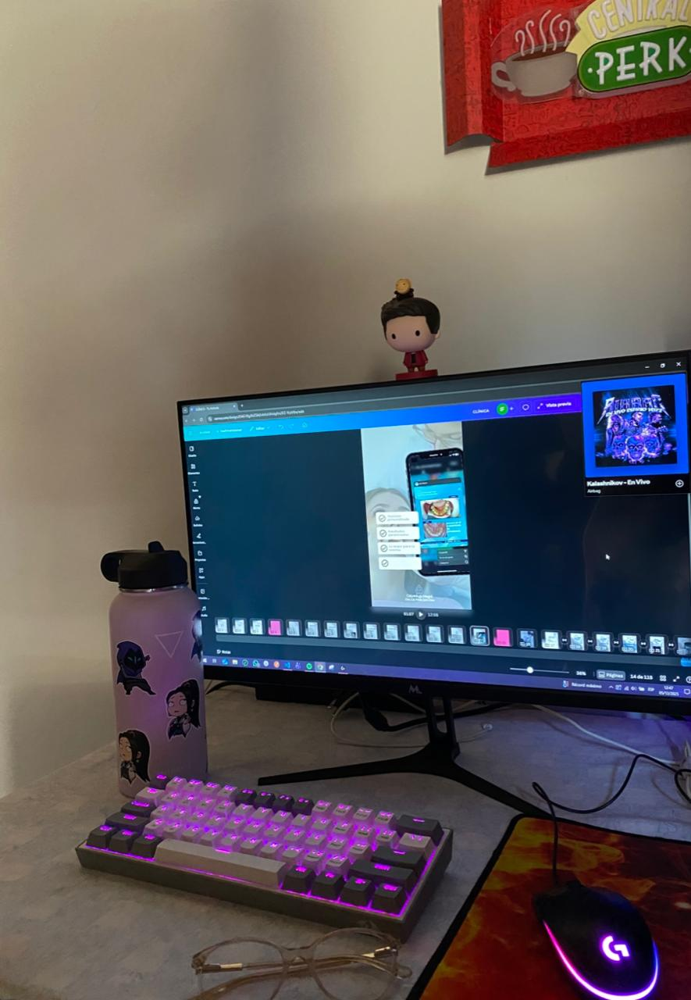

Mi nombre es Sara, vivo en Capiatá. Me considero una persona empática y detallista, disfruto tener todo bien organizado (¡amo anotar!📝).
Recientemente finalicé mi aporte como QA Junior en la empresa Mastertechsl, donde adquirí experiencia en casos de prueba, reporte de bugs, smoke tests y validaciones. Actualmente me encuentro en búsqueda activa de nuevas oportunidades.
En el 2022 obtuve mi título de Licenciatura en Análisis de Sistemas. Mi tesis fue el desarrollo de un sistema desktop de gestión académica, operativa y documental para una institución educativa, programado en Java con base de datos MySQL.
Enero - Marzo 2026
Mi rincón fav.
